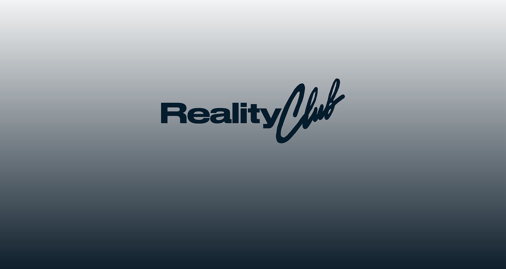

|  | |
Reality Club |
|
Ikuti KamiDengarkan SekarangJadwal Tour
|
Profile BandReality Club merupakan grup musik indie rock asal Indonesia yang dibentuk pada 16 April 2016. Grup musik ini digawangi oleh Fathia Izzati yang juga seorang youtuber. |
PembentukanAwalnya, grup musik ini terbentuk oleh Fathia Izzati, Era Patigo dan Mayo Falmonti pada 2016. Namun kemudian, Fathia mengajak kakaknya, Faiz Novascotia Saripudin dan Iqbal Anggakusumah untuk bergabung. Namun sayang, Mayo memutuskan untuk keluar setelah enam bulan terbentuk karena kesibukan pribadi dan digantikan Nugi Wicaksono. |
|
Personil
|
|
Album TerbaruWho Knows Where Life Will Take You? sudah tersedia di berbagai platform musik kesayangan anda. Dengarkan Album Lainnya. |
|
© Copyright |
|